后台管理团队
Discuz! 将以往的单一论坛模式下的管理组管理模式升级成了通过管理团队的分工和协作来管理站点内容的模式。细分每个管理团队成员的管理范围和内容，甚至可以细化到某一项独立的管理动作上；管理团队内不同职务的管理人员有着各自不同的管辖范围，可以避免站内的管理工作互相冲突；负责不同区域的管理人员之间权力不能互通，可以达到很好的分权效果。
下图是权限细化的一些管理选项，可以看出 Discuc! 系统中对权限的细分已经可以指定到每一项管理动作中。
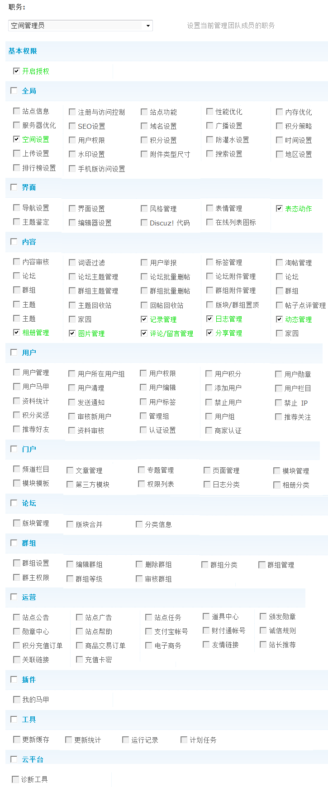操作路径：【后台】=>【站长】=>【后台管理团队】
在这里创始人可以设置某个团队职务给指定的用户。
一、站长/创始人。
使用管理团队功能，首先要为站点设置一个创始人。
打开 config/config_global.php，找到 [cdoe]$_config[‘admincp’][‘founder’][/code]设置创始人。
如：设置了[code]$_config[‘admincp’][‘founder’] = ‘1’;[/code]假设站点最高身份用户的 UID 为 1，这样 UID 为 1 的用户为站点的创始人，此人必须是管理员用户组的成员。
二、新增职务
在新增后台填写职务名称，然后选择具体的职务点击提交即可。
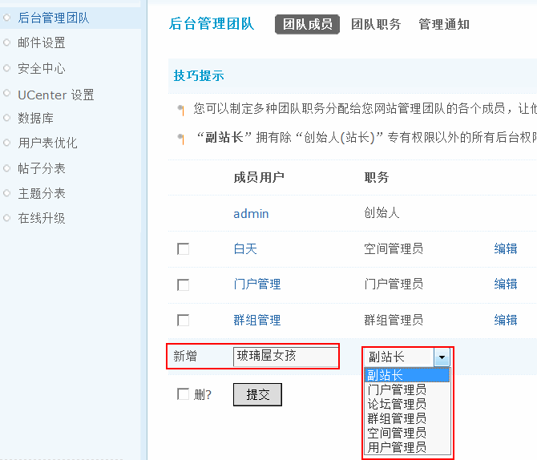创始人可以制定多种团队职务分配给你网站管理团队的各个成员，让他们管理网站的不同事务，包括副站长、门户管理员、论坛管理员、群组管理员、空间管理员和用户管理员。
“副站长”拥有除“创始人(站长)”专有权限以外的所有后台权限，仅次于“创始人(站长)”。
“门户管理员”拥有除“第三方模块”和“权限列表”外的所有门户的管理权限，包括频道栏目、文章管理、专题管理、页面管理、模块管理、模块模板、日志分类和相册分类同时还具有内容的管理权限，包括帖子点评管理权限。
“论坛管理员”拥有全局、内容和论坛的管理权限，其中全局中包括附件类型尺寸；内容的管理权限包括词语过滤、用户举报、论坛主题管理、论坛批量删帖、论坛附件管理、主题回收站、版块/群组置顶；论坛管理权限包括版块管理、版块合并和分类信息。
“群组管理员”拥有内容和群组的管理权限，其中内容的管理权限包括群组主题管理、群组批量删帖和群组附件管理；群组的管理权限包括群组设置、编辑群组、删除群组、群组分类、群组管理、群主权限和群组等级。
“空间管理员”拥有全局、界面和内容的管理权限，全局的管理权限有空间设置；界面的管理权限有表态动用；内容的管理权限包括记录管理、日志管理、动态管理、相册管理、图片管理、评论/留言管理和分享管理。
“用户管理员”拥有用户的管理权限，包括用户管理、用户所在用户组、用户权限、用户积分、用户勋章、用户马甲、用户清理、用户编辑、添加用户、用户栏目、发送通知、禁止用户、禁止 IP、积分奖惩、审核新用户、管理组、用户组、推荐好友和资料审核。
三、不同职务权限演示
下面以站点的门户管理员和论坛管理员为例，来说明一下管理团队的管理职务与管理范围之间的区别。
如图所示，在站点中设置了图中的两个用户分别为门户管理员和论坛管理员。
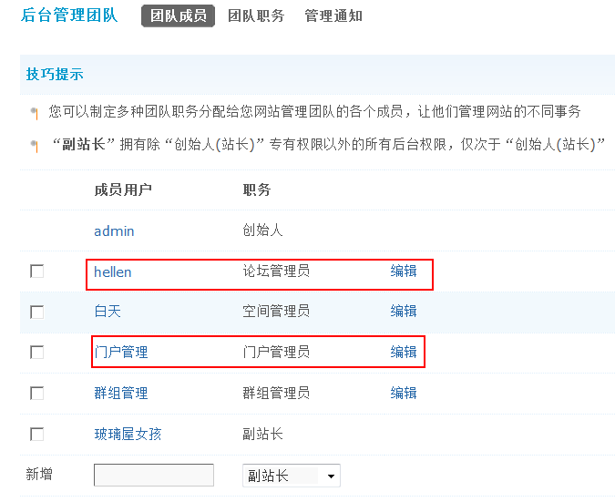那么根据他们的管理权限的不同，当分别登录站点的后台时，所能管理的内容也不同。前者是针对门户的管理内容，后者是针对论坛的管理内容。
1、门户管理员的管理权限和管理内容
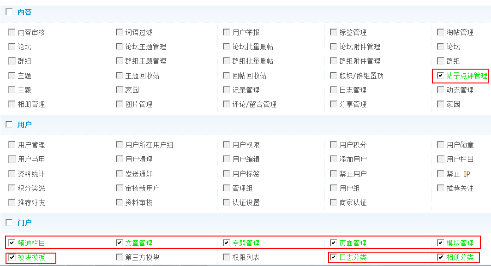当门户管理员登录后台，可以管理的内容：
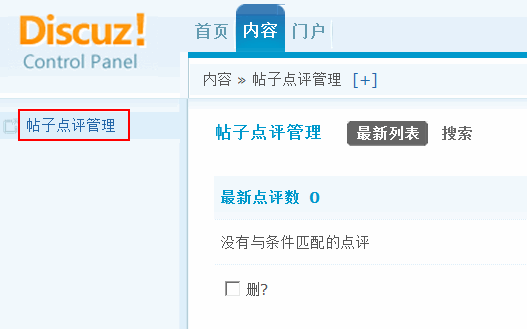当门户管理员登录后台的管理权限:
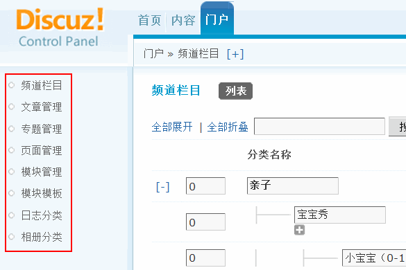2、论坛管理员拥有全局、内容和论坛的管理权限
全局管理权限
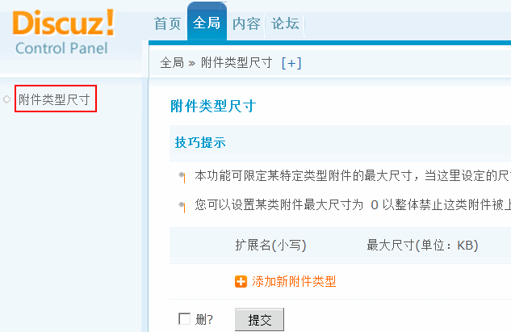内容的管理权限
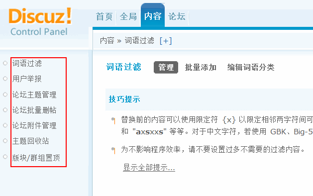论坛的管理权限
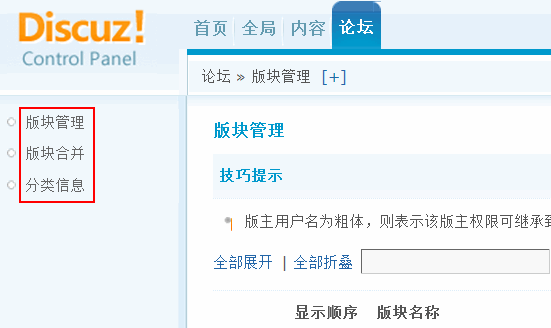四、团队职务
可以根据不同的职务名称设置不同的权限。点击“编辑”即可修改。
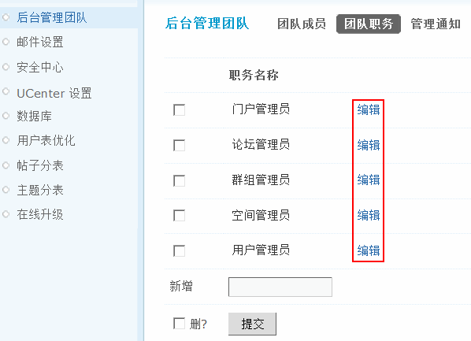五、管理通知
可设置哪些用户可以接收管理类的通知，新增用户名提交即可。
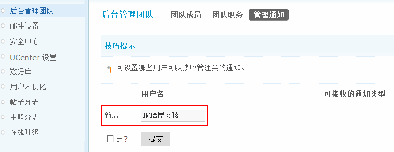提交成功后，可以设置可接收的通知类型。
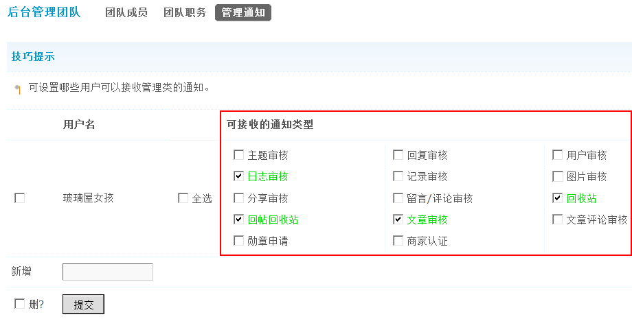